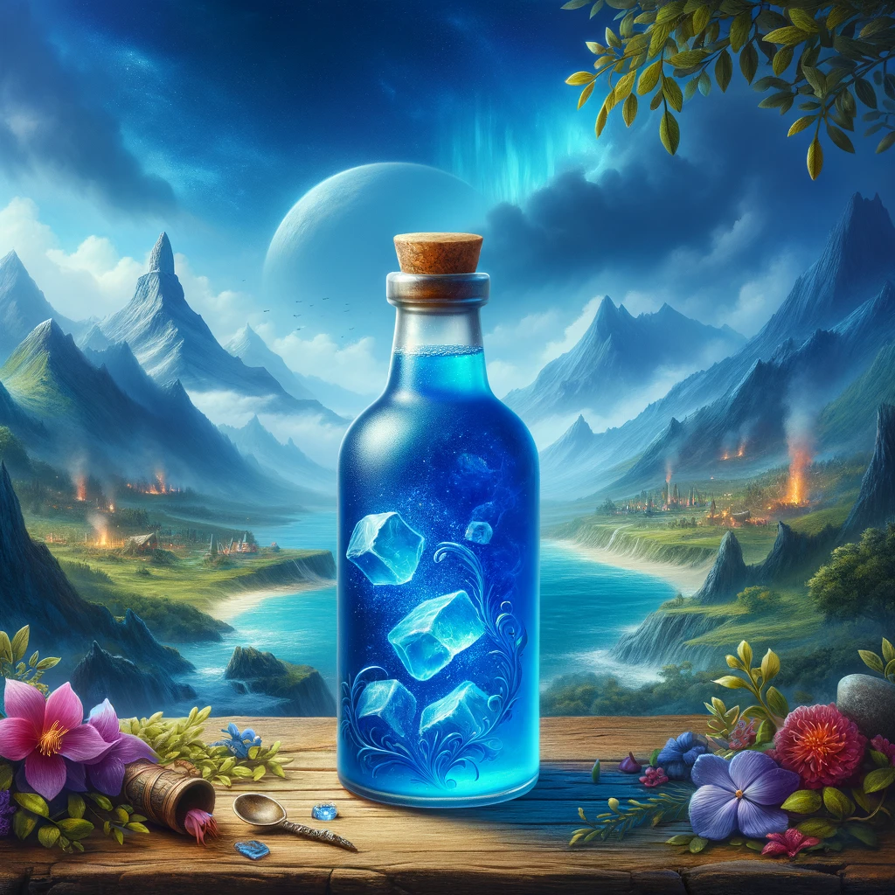

Skyrim-inspired Potion of Restoration Recipe

Description
Embark on a mystical journey with this Potion of Restoration. A vivid blue, slightly fizzy drink, it's as rejuvenating as it is enchanting. Set against a backdrop of mystical mountains and a fantasy world, this potion captures the spirit of adventure and magic. Perfect for restoring your health and stamina, or simply enjoying a moment of fantasy-inspired relaxation.
Ingredients
- 1 cup blue Gatorade
- 1/2 cup ginger ale
- A dash of dragon's breath (hot sauce)
- Ice cubes engraved with ancient runes (or regular ice cubes)
Steps
- Mix Gatorade and ginger ale in a potion bottle (or a regular glass).
- Add a dash of hot sauce for that fiery kick.
- Drop in the rune-engraved ice cubes.
- Drink to restore health and stamina (or just for refreshment).